Dragonglow
Chapter 2: The Egg in the Sock
Tap to open
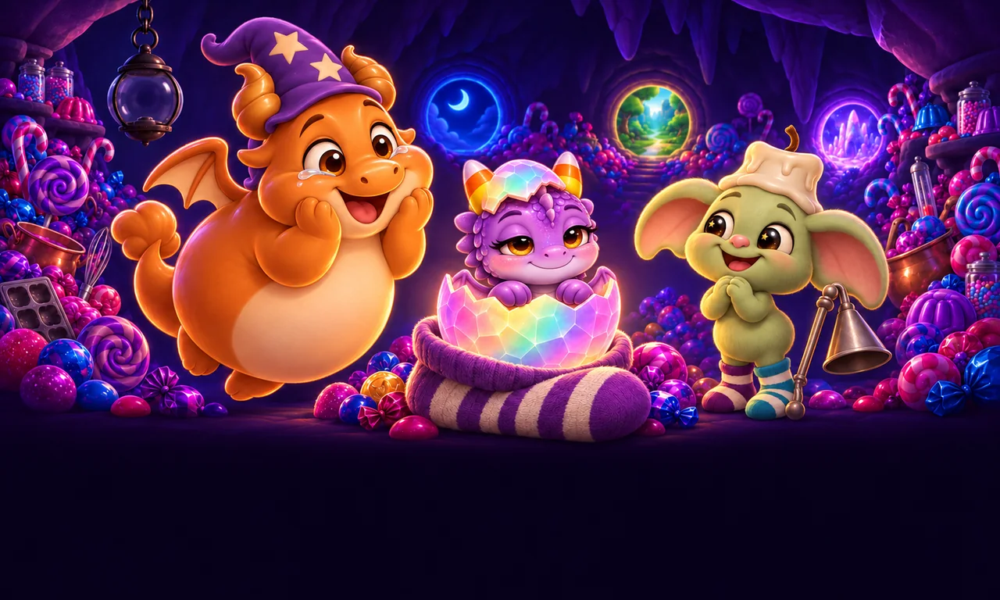
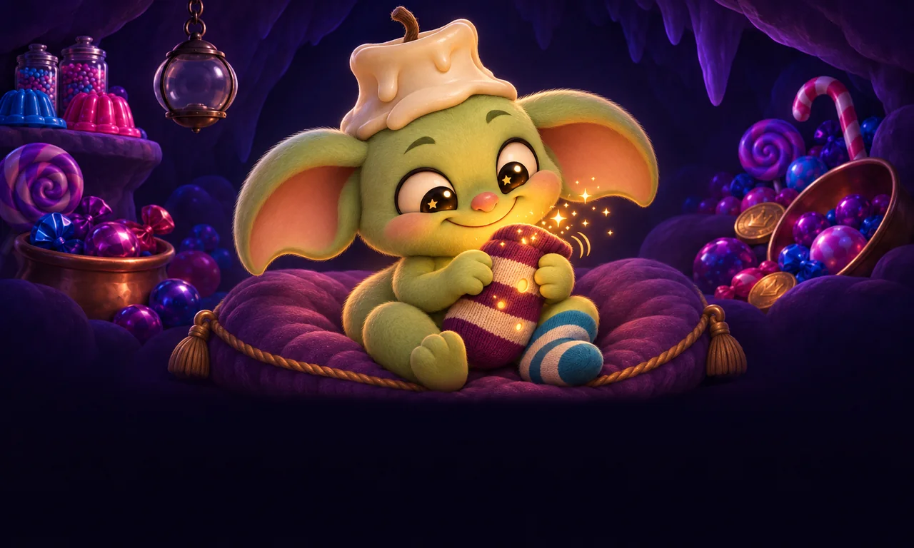
Remember last Halloween? The travelers lit the Hoard Beacon, and the whole cave cheered.
Everyone looked up at the light. Everyone except Snuffwick.
Snuffwick was looking down, into his favourite sock. It was striped and a little holey, and it was warm. Something inside it glowed.
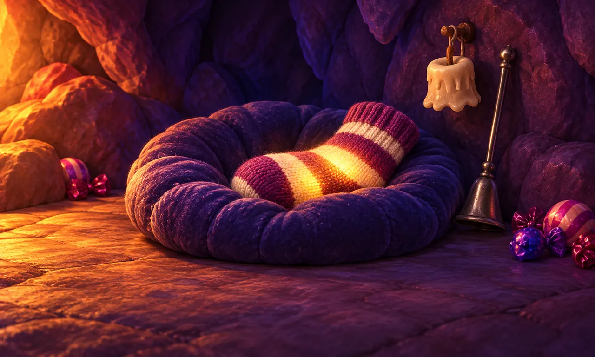
All year long, Snuffwick kept the sock safe.
He tucked it under his chin at nap time. He hid it from the cold. He even kept a little nightlight on for it, and Snuffwick is the goblin who loves the dark.
And from inside the sock came a tiny sound. Tap… tap… tap.
Just before Halloween: crack!
Inside the sock was an egg, a crystal egg just like the one Butterscotch hatched from long ago. And out of it peeked a baby dragon, blinking at the candy and the lights.
“Toffee!” said Butterscotch, with happy tears in his eyes. “Her name is Toffee.”
Snuffwick puffed up very proud. He had been the egg-sitter all along.

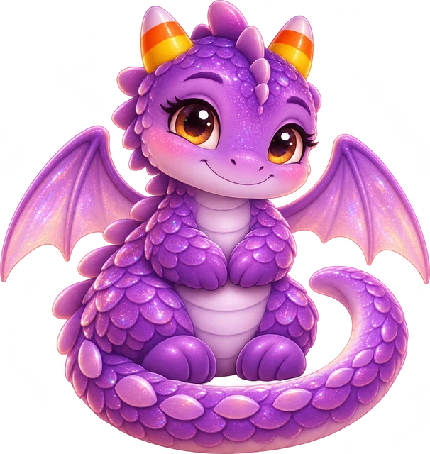
Toffee is small and round and glittery purple, from her nose to the tip of her curly tail.
Her two little horns look exactly like candy corn. Her eyes are big and golden-brown. And her wings shimmer pink and lilac.
Butterscotch's wings are much too small to fly. But Toffee's? Toffee's wings are going to fly one day. She is sure of it.
Her bed is Snuffwick's striped sock. She won't sleep anywhere else.
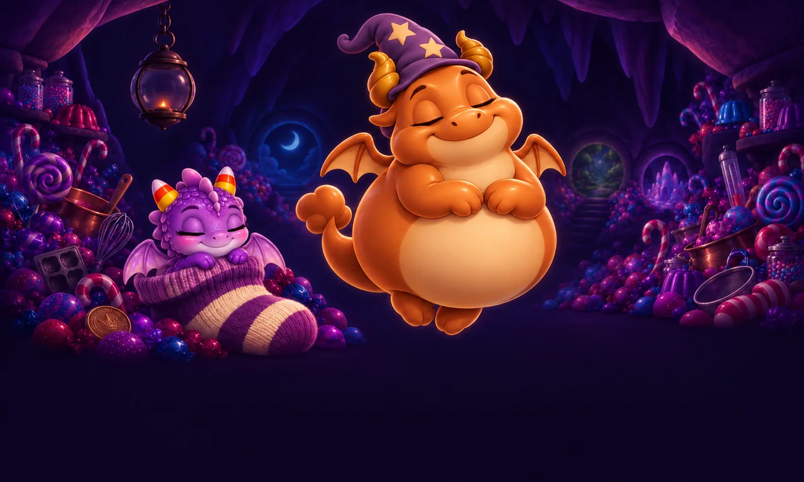
But Toffee is a baby, and babies are so sleepy.
When a crystal glows near Butterscotch, he wakes right up. When a crystal glows near Toffee, she yawns, rolls over, and snuggles deeper into the sock.
“Zzz… five more minutes…”
Baby dragons need a lot of glow. A whole night of it.

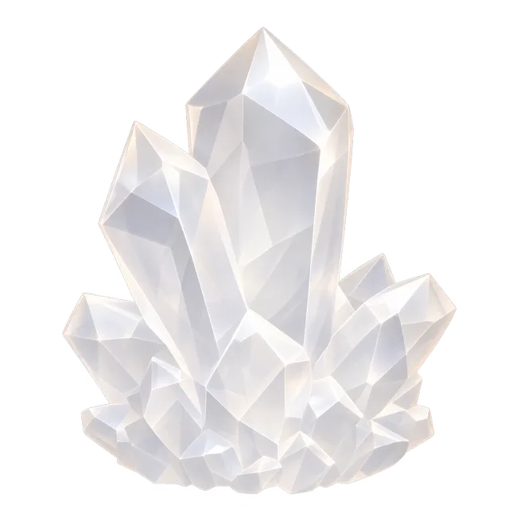
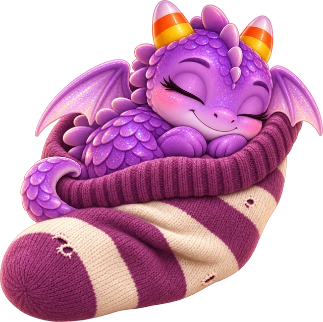
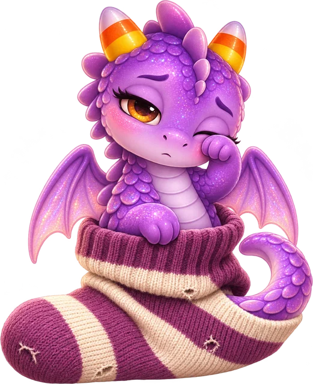
That is where the travelers come in.
Every crystal set on the Wakestone sends a little of its glow to Toffee. One crystal, and she wriggles in her sleep. More crystals, and one eye opens. More still, and she yawns the biggest yawn and stretches out her wings.
Spark by spark, as the Hoard Beacon fills, Toffee wakes up a little more.
Your crystal helps. Every one does.

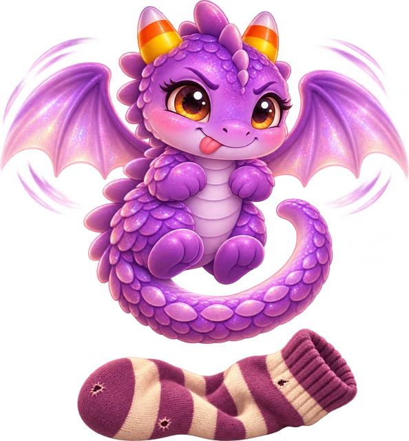
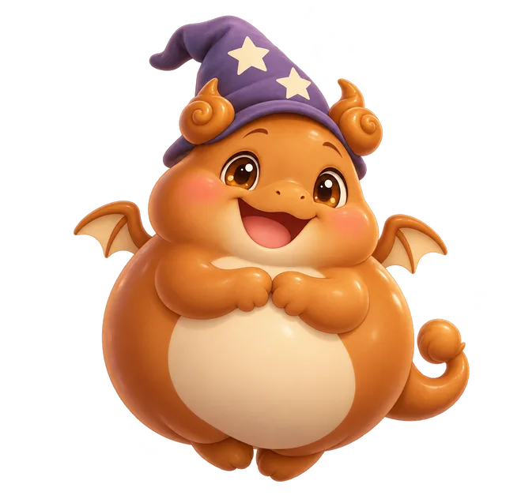
And when the beacon is full and blazing, Toffee will be wide awake at last.
She will flap. She will flap hard. Her tongue will poke out. And for one wobbly second, she will float above the sock.
“Teach me to fly! Please, please!”
“Flying lessons, little one!” Butterscotch will chuckle. “Starting tonight!”
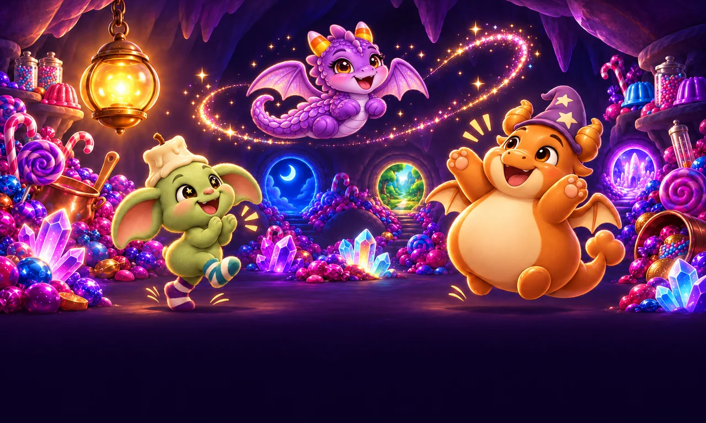
So bring your crystal back this Halloween.
Set it on the Wakestone and wake both dragons. Help fill the beacon. And when it blazes, Toffee's flying lessons begin: her very first loop, her very first landing (bumpy), and higher, and higher.
“Wake us both, travelers!”
…and high in the cave wall, a little round door that had never, ever opened gave the tiniest wobble.
The End (of Chapter 2, for now)